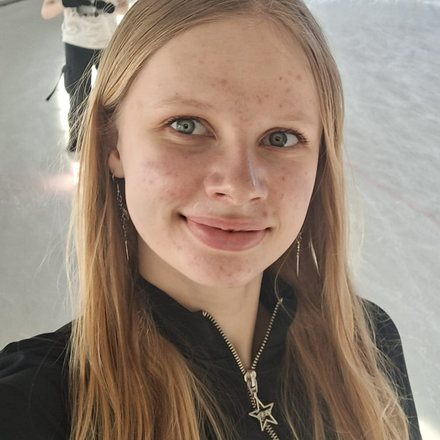
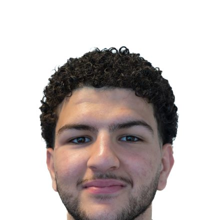

New staff who can find the answer themselves.
We turn what your venue already knows into a three-shift plan and a reference card your new starter uses during service — so you stop explaining the same ten things to every new face.
Small independent cafés, restaurants and bars. Starting in the Brainport region, built for the Netherlands.
Free first version for venues in the Eindhoven region.
Measured in three independent venues — a brasserie, a coffee bar and a cocktail bar — against each manager's own estimate of what onboarding normally costs them.
How it works
Three visits. About two hours of your time in total.
We listen
Your floor plan, your table numbers, the ten things every new person gets wrong here, your allergens. Your words, not ours.
You get a plan and a card
One page for you and the buddy. A laminated card your new starter keeps on them, and the same thing on their phone.
We keep it right
New menu, new floor, new routine — we update it. A guide nobody maintains stops being used within a season.
What it costs
Then €180, €420 or €780 a year to keep it current, depending on how often you hire. Replacing one service employee costs a venue around €15,000 — this is a fraction of losing one.
“No milk mix-ups at all — that's a first. And the buddy actually let her do things, because the plan said so.”
Owner, coffee bar, Eindhoven centre
What we do
The information isn't missing. It arrives at the wrong moment.
Every venue we studied already had something written down. None of it reaches the person while they are on the floor.
The problem
Eight in eleven managers we surveyed lose more than an hour a week re-explaining the same things. All eleven said it worsens as turnover rises — and Dutch hospitality turns over about 40% of its staff a year.
One pilot venue had a printed booklet and a folder of documents online. Drinks still went to the wrong table. Another keeps no material at all and puts a colleague beside every newcomer instead.
In both cases the knowledge is carried by a person, in the moment, on the floor. That is the thing we replace — not the handbook.
What you get
A three-shift plan
What the new starter learns on shift one, two and three, so nobody teaches everything on the first night.
A reference set built from your venue
Your table numbers, sections, allergens and signature items. Laminated for an apron or a workstation, and on their phone behind a QR code.
An annual update
Menus change, floors change. We revise, reprint and republish so the material does not quietly rot.
Why not the software you've seen
Good products. All of them solve a different moment.
| Option | What it offers | When it works |
|---|---|---|
| eitje | Knowledge centre, onboarding paths, quizzes | Before the shift |
| Typsy | Video training library | Before the shift |
| Trainual | Process documentation and training | Before the shift |
| A colleague | Answers anything, instantly | During the shift, at the cost of their own |
| Footing | Your venue's own content, in their hand | During the shift |
Prices and features checked October 2026.
What we are not
Not a training platform, and not trying to become one. No logins, no courses, no dashboard. A person comes to your venue, listens, and leaves you something your new starter can hold.
Evidence
We didn't guess. We ran it in three real venues.
Before we asked anyone to pay for this, we put it into three working venues and measured what happened.
What we did
| Method | Scale | What it told us |
|---|---|---|
| Manager interviews | 2, recorded | The knowledge is carried by a person, not by material |
| Surveys | 16, 11, 11, 8 | Size of the time cost, appetite for the solution, pricing model |
| Desk research | 13 sources | Every competing product works before the shift, not during |
| Field pilots | 3 venues × 3 shifts | What actually happens when a venue uses it |
The pilot
One new part-time employee per venue, across their first three shifts. Each manager gave a baseline before we started; manager and employee both logged every shift.
| Venue | Their own estimate | Measured | Change |
|---|---|---|---|
| Brasserie, ~70 seats | 6 h | 3.7 h | −39% |
| Coffee bar, ~36 seats | 5 h | 3.2 h | −37% |
| Cocktail bar, ~90 seats | 8 h | 4.8 h | −40% |
Requests for help fell from 61 on the first shift to 22 on the third. In every venue the mistake the manager had named as most costly — food to the wrong table, the wrong milk, the wrong portion — stopped happening.
Every venue kept the material after the pilot, and two have already asked for it again for staff starting in the next two months.
Team
Six people, and one rule about who checks whose work.
International Business students at Fontys in Eindhoven. Roles came from each person's entrepreneurial profile, not from who volunteered first.
Soultana Bouki
Project Coordinator
Planning, deadlines, documentation, client intake. The strongest organising profile in the team.
Ruben Leeuwarden
Team Lead
Direction, decisions, market research. Comfortable deciding under uncertainty.

Julia Hoed
Finance Lead
Pricing, cost structure, break-even, cash planning.

Marouan Aghadar
Sales & Communication
Venue acquisition and channel testing. Our growth depends on walking into venues; this is his strongest trait by some distance.
Md Yeasin Hossain
Innovation & Concept
Product design and experiment design. Built the instruments the field test ran on.
Laiz Ammary Hourani
Quality & Documentation
Reviews deliverables, checks sources, keeps material current.
How we work
Nobody here has a specialist-dominant profile, so quality control is a rule rather than a person: whoever did not write something reviews it before it goes out. Planning scores low in three of six profiles, which is why coordination sits separately from leadership.
For investors
Small, proven, and priced on real costs.
A service business with validated demand, a tested product and honest margins. Brainport is where we start, not where the market ends.
Market
| 40,000 | Eating and drinking venues in the Netherlands |
| 25,200 | Independent, employing part-time staff — our serviceable market |
| 8 → 20 | Venues in year one, cumulative by year two |
Unit economics
| Build price per venue | €895 |
| Cost price (20 h delivery and acquisition, at loaded wage) | €531 |
| Contribution per build | €364 |
| Maintenance per year, by hiring frequency | €180 / €420 / €780 |
| Break-even | 3.7 venues |
| Profit, year one → year two, after paying every team hour | €1,546 → €5,236 |
Our own hours are costed at minimum wage plus holiday allowance and employer charges, so these are profits after labour. Below roughly €700 a build the service loses money, which is how the price was set.
What we're asking for
Not money. Year one is funded by the team and breaks even on the fourth venue.
Introductions: to venue owners, and to multi-site operators. A ten-venue group hiring a hundred people a year is where this becomes a different business.
One thing we have not tested: whether the service reduces staff turnover. Replacing one service employee costs a Dutch venue about €15,000 (ABN AMRO), but our pilots measured time and errors, not retention. We would rather say so than price on it.
Contact
Twenty minutes, in your venue, at a quiet hour.
That is the whole first step. We come to you, we ask questions, and you get the first version free.
Phone
Based in Eindhoven. We visit venues across the Brainport region.
Before you ask
- How much of my time does this take?
- Twenty minutes for the intake, and a few minutes per shift during the first three shifts if you want the measurement. Nothing else.
- What if it doesn't work in my venue?
- The first version is free and you decide afterwards. We would rather have an honest no than a venue that paid once and never used it.
- Do my staff need to download anything?
- No. The card is physical and the phone version is a web page behind a QR code. No accounts, no app, no logins.
- Is my information shared with other venues?
- Never. Your floor plan, routines and recipes are yours, and we delete our notes on request.